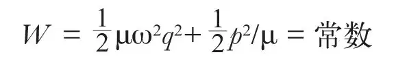
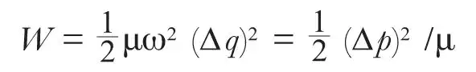
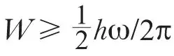
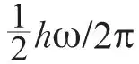

英文
英文纽因
编者按
1913年，阿尔伯特·爱因斯坦和奥托·斯特恩提出，如果在任何情况下，分子振动能量都不会完全等于零，而是存在着一个无法消除的残余能量，那么低温下氢气比热的测量（一项关于氢气温度随输入热量变化的测量）结果就能得到很好的解释了。紧接着，理论物理学家们从量子力学的方程中推导出了这一残余能量，其后来被称之为零点能。但是这一效应缺乏直观的合理性。这篇文章中，纽因认为零点能可以被看作是海森堡的测不准原理的推论，测不准原理认为不能同时精确的获知微观粒子的位置和动量。纽因的结果表明零点能的可能最小值与之前根据量子理论推导出的结果是一致的。 英文
根据量子力学原理，一个振子具有确定的振动零点能，科学工作者也正在试图使用一些基本的原理来对这一结果进行直接的表述。在简单的谐波场中，考虑到位置、动量和能量之间的特殊关系，我们发现或许可以根据测不准原理推导出零点能。 英文
处于零点能态的振动粒子如果会静止于场的中央，那么它的位置和动量都能准确地确定下来。但是这与测不准原理相矛盾，因此谐振子是不可能处于这种态的。我们可以根据测不准关系∆p∆q≥h/2π计算出能量的最小值。一维谐振子的能量是由下面的能量方程定义的

如果我们这样理解：
q的大小 = ∆q = 位置不确定度
p的大小 = ∆p = 动量不确定度
于是有

得出
μω∆q = ± ∆p
对于实数∆p，必须取正号，根据测不准关系，我们推导出(∆p)2≥hμω/2π，因此可得，

。当求能量的最小值时取等号，于是得到零点能为
。 英文
（沈乃澂 翻译；李淼 审稿）